Прямые поставки автомобилей из Японии, Кореи и Китая с 2018 года
Компания FASTS-CAR была основана в 2018 году во Владивостоке с целью предоставления российским автолюбителям доступа к качественным автомобилям из Азии по доступным ценам без посредников.
Начав с поставок нескольких автомобилей из Японии для знакомых, сегодня мы выросли в компанию, которая ежегодно доставляет более 200 автомобилей в разные регионы России.
Наше ключевое преимущество — работа напрямую с аукционами Японии, Кореи и Китая, что позволяет предлагать цены на 15-20% ниже рыночных.
Сделать покупку автомобиля из-за рубежа простой, безопасной и выгодной для каждого клиента, обеспечивая полную прозрачность на всех этапах сделки.
Мы предоставляем полную информацию о состоянии автомобиля, включая все недостатки. Никаких скрытых платежей в сделке.
Все автомобили проходят проверку на юридическую чистоту. Мы несем ответственность за легальность оформления документов.
Работа напрямую с аукционами позволяет нам предлагать цены ниже рыночных на 15-20%.
Каждому клиенту мы уделяем максимальное внимание, подбирая автомобиль по его конкретным потребностям и бюджету.
Мы сопровождаем сделку от первой консультации до постановки автомобиля на учет в ГИБДД.
Предоставляем подробные фото- и видеоотчеты на каждом этапе, начиная с аукциона и заканчивая доставкой.
Профессионалы с многолетним опытом работы на рынке автомобилей из Азии
Что говорят о нас наши клиенты
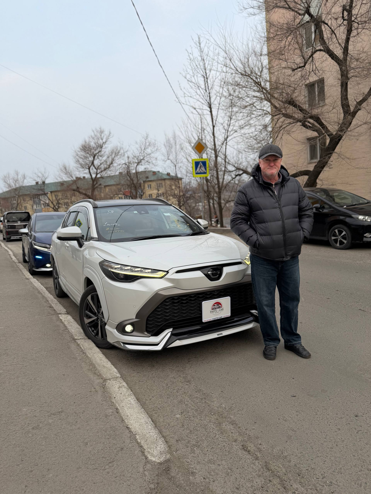
"Брал Corolla Cross через FASTS-CAR. Машина пришла с пробегом 20 000 км, в идеале. Сергей подобрал комплектацию Modelista — выглядит просто шикарно. Оценка аукциона 4.5B, всё совпало с реальностью. Очень доволен покупкой!"
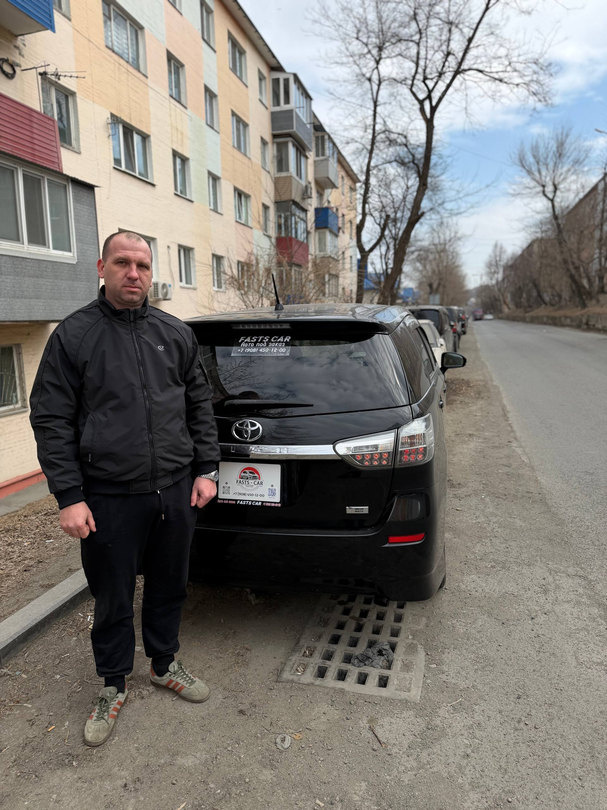
"Искал вместительный минивэн для семьи с тремя детьми. Ребята нашли Wish с пробегом 133 000 км за очень адекватные деньги. Машина в отличном состоянии, никаких сюрпризов после приезда. Рекомендую!"
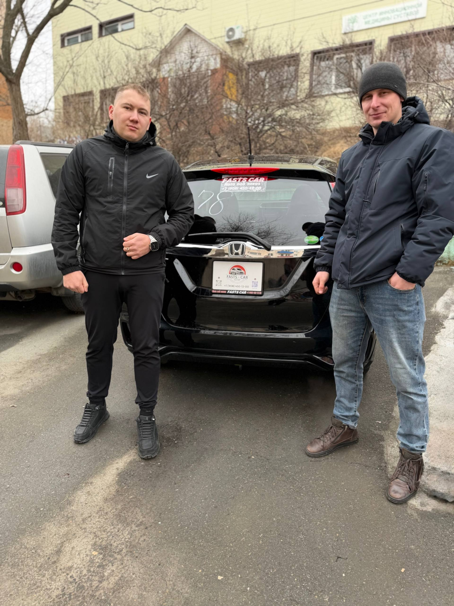
"Первая машина из Японии — боялась, но Сергей всё объяснил по шагам. Honda Fit приехала точно как на фото с аукциона. Расход топлива минимальный, в городе просто идеал. Спасибо FASTS-CAR за честную работу!"
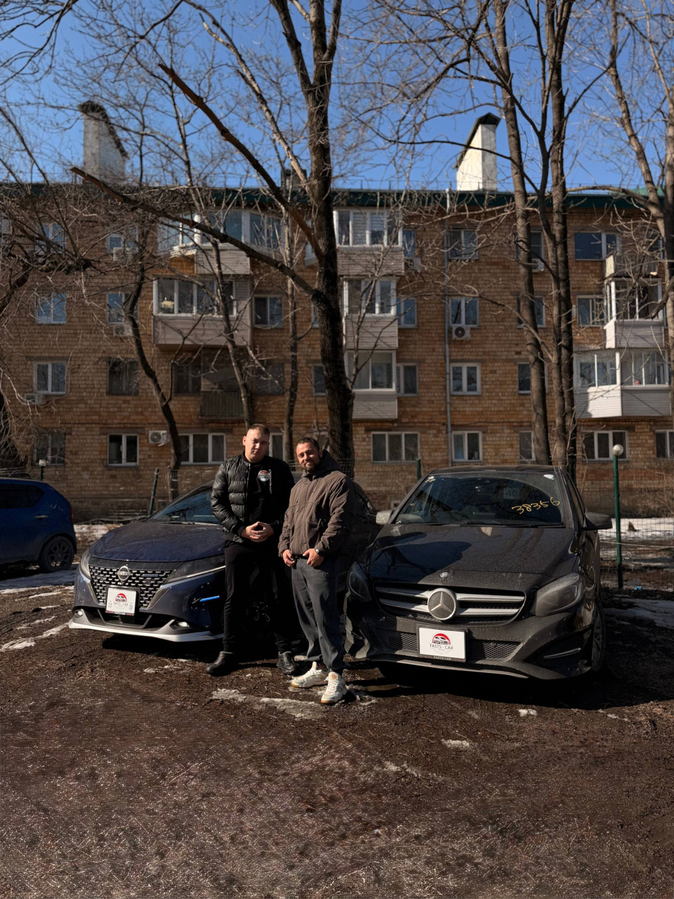
"Хотел немецкое качество за разумные деньги — нашли B180 из Японии с полным пакетом безопасности Radar Safety. Пробег 69 000 км, состояние отличное. Никогда не думал, что Mercedes можно купить так выгодно. Всё честно и прозрачно!"
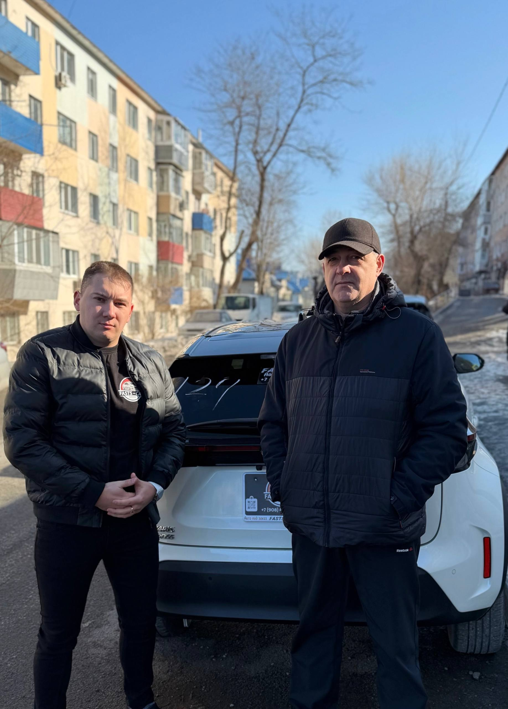
"Yaris Cross в двухцветном кузове Pearl Two-Tone — мечта! Сергей нашёл именно такую комплектацию Z на аукционе TAA Chubu. Пробег всего 25 000 км, оценка 4.5B. Машина пришла как новая, очень довольна!"
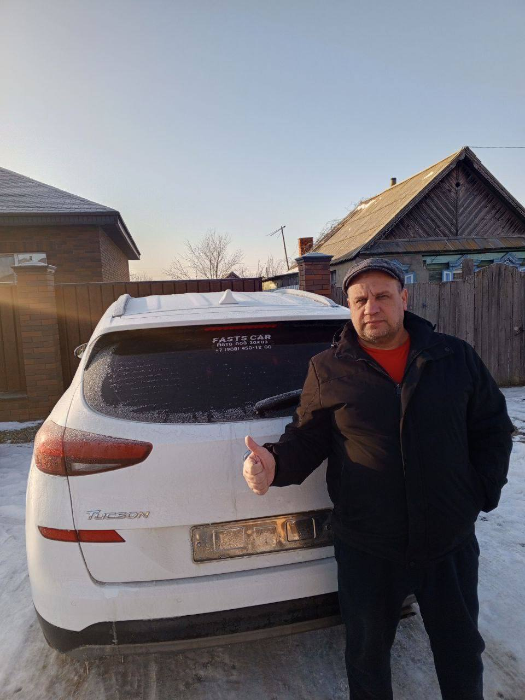
"Привезли Tucson прямо из Кореи — свежий, ухоженный, пробег 40 000 км. Ребята честно предупредили про небольшой окрас крыла, цена была скорректирована. Очень ценю такую честность. Доставили до Астрахани без проблем!"
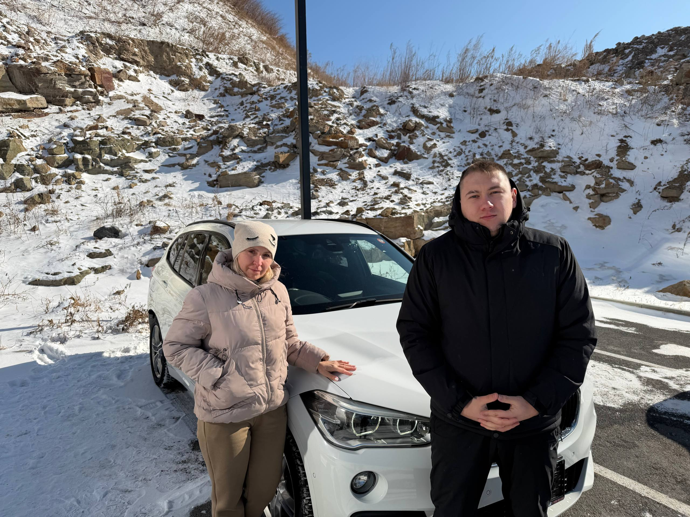
"BMW X1 M Package с пробегом 25 000 км — просто находка! Оценка 4.5 на аукционе USS JAA, и это видно сразу: машина в идеальном состоянии. За такую цену в России подобного не найти. FASTS-CAR — работают на совесть!"
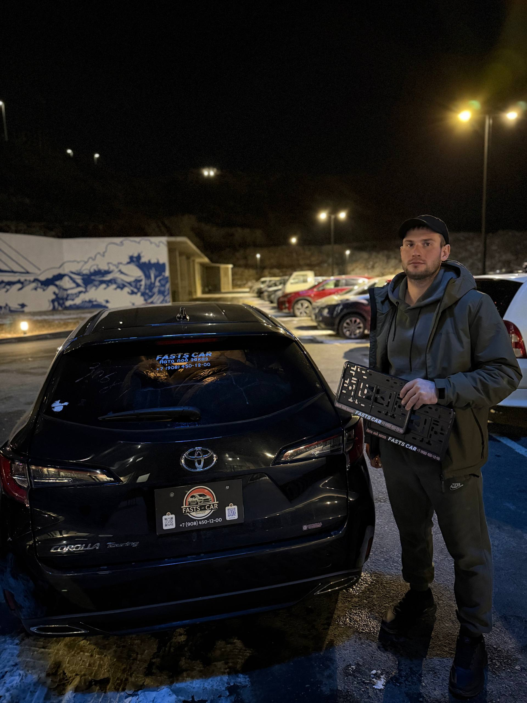
"Corolla Touring WXB 2022 года — свежая, красивая, с пробегом 47 000 км. Аукционная оценка 4B полностью подтвердилась. Забрал машину во Владивостоке, уже накатал 5 000 км — ни одной проблемы. Отличная компания!"
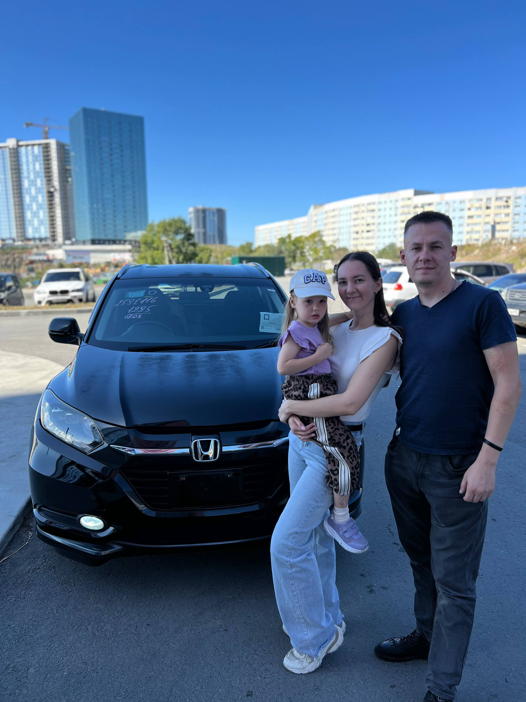
"Привезли Vezel из Китая — без единого ДТП, комплектация Luxury, вариатор. Сергей сопроводил всю сделку и лично проверил машину перед отправкой в Иркутск. Очень приятно работать с людьми, которым можно доверять!"
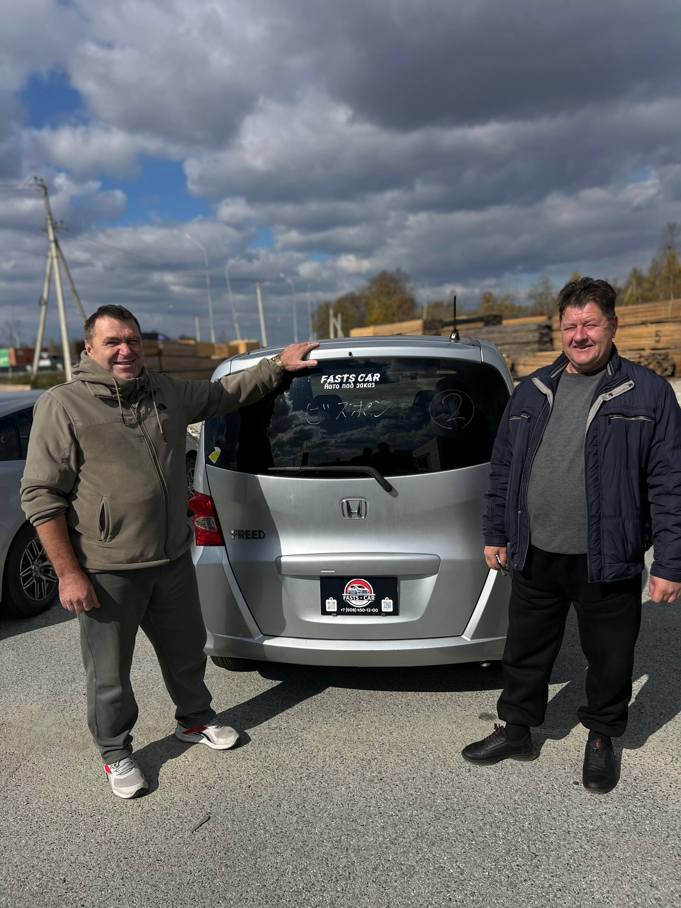
"Freed G Highway Edition — отличный семейный минивэн. Пробег 68 000 км для 2011 года просто смешной! Машина ухоженная, японцы берегут свои авто. Цена порадовала, доставили быстро. Уже посоветовала подруге!"
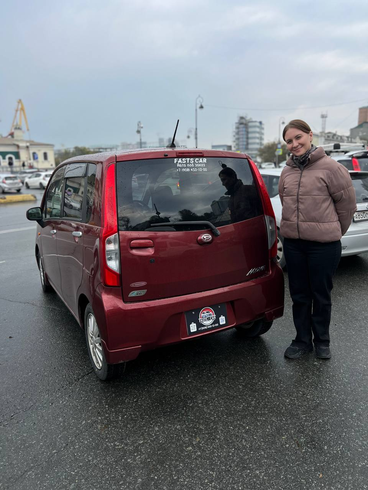
"Move Custom X SA III — маленькая, но очень функциональная машинка для города. Брал для жены, она в восторге! Расход копеечный, паркуется везде. Сергей помог выбрать именно эту комплектацию с системой безопасности SA III. Спасибо!"
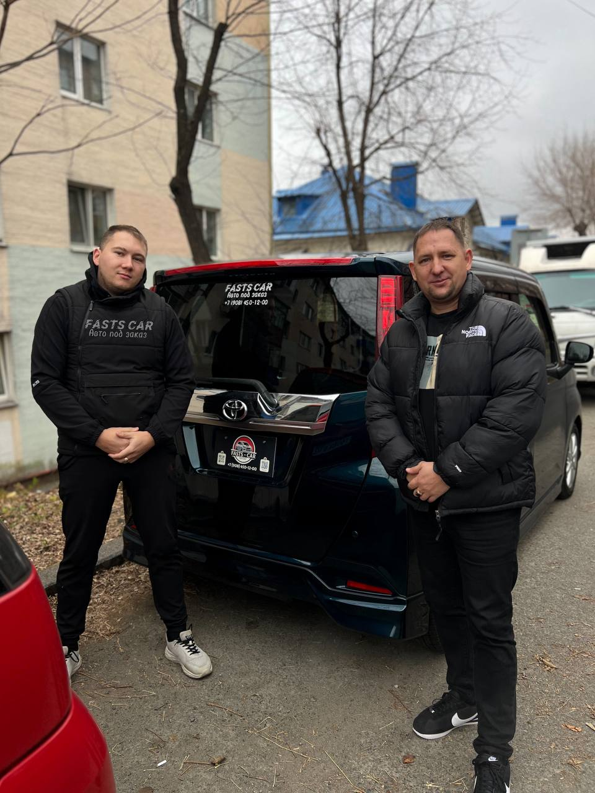
"Roomy G-Turbo с обвесом Modelista — выглядит дорого и стильно! Турбо-мотор тянет отлично несмотря на объём. Пробег 87 000 км, но машина как свежая — японцы умеют ухаживать за авто. FASTS-CAR — честные ребята, буду обращаться ещё!"
Больше отзывов вы можете найти в нашем Telegram-канале или Instagram.
Свяжитесь с нами для консультации по подбору автомобиля из Японии, Кореи или Китая